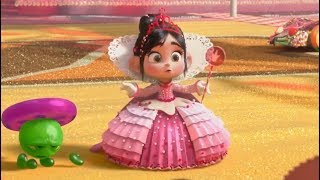

Venellope Vanellope von Schweetz é uma das personagens principais do filme
Detona Ralph (2012) e sua sequência Detona Ralph 2: Quebrando a Internet (2018). Ela é uma garota doce,
enérgica
e cheia de personalidade, vivendo no jogo de corrida Sugar Rush, um jogo de corrida de doces que, devido a
um
erro no sistema, a considera um "bug". Inicialmente vista como uma pária e tratada como uma personagem
problemática no jogo, Vanellope demonstra grande coragem, inteligência e um forte senso de justiça, além de
uma
habilidade incrível para correr e manipular o próprio código do jogo.
historia
Vanellope vive no mundo de Sugar Rush, um jogo de corrida de carros feito de doces, onde é vista como
uma "bug", algo não programado no jogo.
No início, ela é excluída pelos outros personagens do jogo devido ao seu status de erro. No entanto, ela
se torna uma heroína ao longo da história, conquistando a sua identidade e ganhando respeito.
Ela forma uma amizade com o protagonista, Ralph, que também busca encontrar seu lugar no mundo dos
videogames. Juntos, eles superam adversidades e acabam ajudando a salvar Sugar Rush.
habilidade
Vanellope é uma corredora excepcional dentro de Sugar Rush, capaz de realizar manobras rápidas e
imprevisíveis, que lhe dão vantagem em corridas.
Como um "bug", Vanellope tem a habilidade única de manipular o próprio código do jogo, o que a permite
realizar feitos que outros personagens não podem. Ela pode alterar o ambiente e até "destruir"
obstáculos no jogo.
Com sua habilidade e coragem, ela eventualmente assume um papel de liderança dentro de Sugar Rush,
provando que os "bugs" também têm valor.
curiosidade
A ideia de Vanellope como uma "bug" veio da ideia de que, em muitos jogos antigos, existiam personagens
ou elementos de jogo inesperados que eram vistos como erros, mas que eventualmente ganhavam destaque.
O universo de Sugar Rush é recheado de cores vibrantes e referências a doces, e Vanellope, como parte
desse mundo, é o reflexo de um ambiente doce, mas também desafiador e instável.
Sua jornada de encontrar seu lugar, vencer os preconceitos e abraçar sua identidade como uma "bug"
ressoa com muitas pessoas que se sentem excluídas ou diferentes.
Durante o filme, Vanellope passa por uma transformação, não apenas no físico, mas também
emocionalmente, quando se torna mais autoconfiante e confortável com quem é.